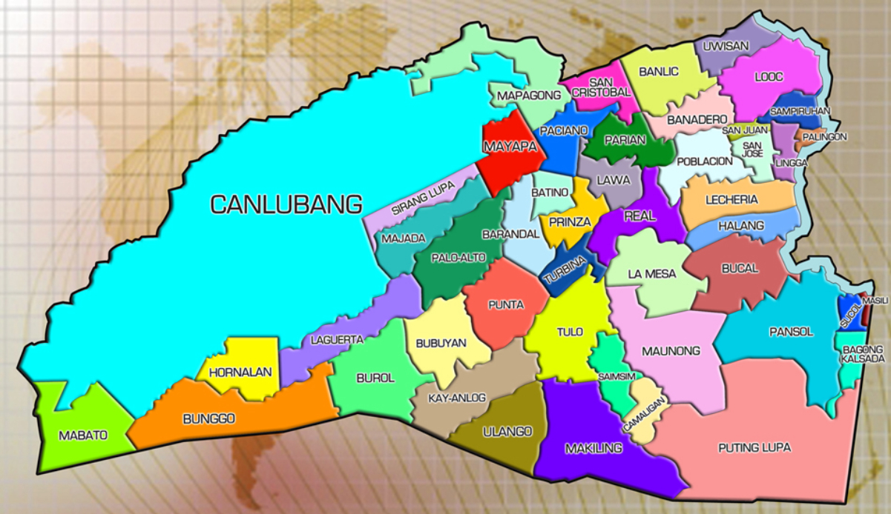

Map of Calamba City

| BARANGAY |
STATUS |
POPULATION(2020 Cencus) |
| Bagong Kalsada |
Urban |
3,892 |
| Banadero |
Urban |
12,647 |
| Banlic |
Urban |
18,335 |
| Barandal |
Urban |
18,076 |
| Bubuyan |
Rural |
3,193 |
| Bucal |
Urban |
14,289 |
| Bunggo |
Rural |
4,437 |
| Burol |
Urban |
3,551 |
| Camaligan |
Rural |
1,345 |
| Canlubang |
Urban |
60,292 |
| Halang |
Urban |
8,528 |
| Hornalan |
Rural |
2,053 |
| Kay-Anlog |
Urban |
20,487 |
| Laguerta |
Urban |
5,461 |
| La Mesa |
Urban |
17,569 |
| Lawa |
Urban |
12,245 |
| Lecheria |
Urban |
10,907 |
| Lingga |
Urban |
6,193 |
| Looc |
Urban |
26,819 |
| Mabato |
Rural |
724 |
| Makiling |
Urban |
12,508 |
| Mapagong |
Urban |
7,254 |
| Masili |
Rural |
3,827 |
| Maunong |
Rural |
4,395 |
| Mayapa |
Urban |
28,382 |
| Paciano Rizal |
Urban |
15,679 |
| Palingon |
Urban |
5,249 |
| Palo-Alto |
Urban |
18,874 |
| Pansol |
Urban |
11,623 |
| Parian |
Urban |
25,558 |
| Barangay 1 |
Urban |
5,823 |
| Barangay 2 |
Urban |
10,627 |
| Barangay 3 |
Urban |
4,537 |
| Barangay 4 |
Rural |
3,301 |
| Barangay 5 |
Urban |
5,858 |
| Barangay 6 |
Urban |
1,693 |
| Barangay 7 |
Rural |
2,357 |
| Prinza |
Urban |
5,284 |
| Punta |
Urban |
7,321 |
| Puting Lupa |
Rural |
2,389 |
| Real |
Urban |
16,371 |
| Sucol |
Urban |
5,233 |
| Saimsim |
Urban |
6,166 |
| Sampiruhan |
Urban |
9,466 |
| San Cristobal |
Urban |
14,881 |
| San Jose |
Urban |
4,061 |
| San Juan |
Rural |
4,826 |
| Sirang Lupa |
Urban |
12,938 |
| Milagrosa |
Urban |
9,687 |
| Turbina |
Urban |
6,268 |
| Ulango |
Rural |
1,060 |
| Uwisan |
Rural |
2,971 |
| Batino |
Urban |
1,616 |
| Majada Labas |
Urban |
10,571 |
The data above are all from the 2020 cencus update.